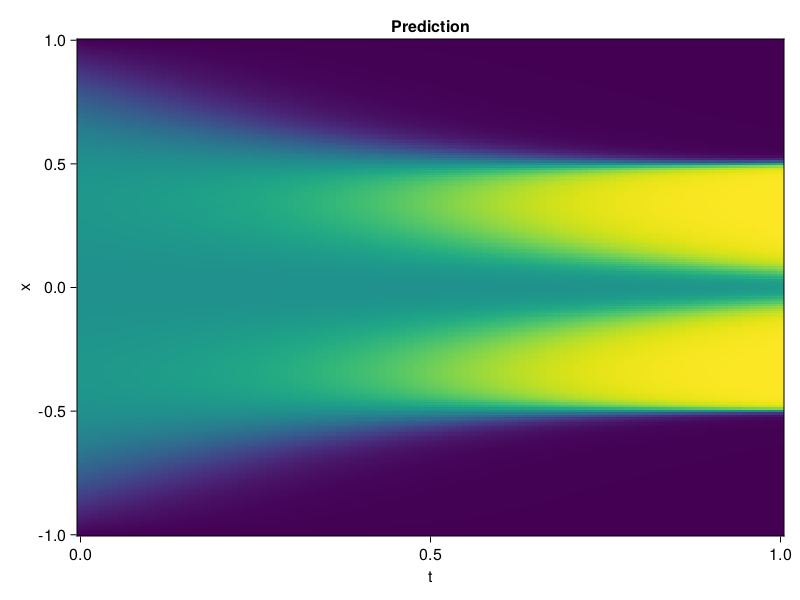

Allen-Cahn Equation with Sequential Training
In this tutorial we are going to solve the Allen-Cahn equation with periodic boundary condition from $t=0$ to $t=1$. The traning process is split into four stages, namely $t\in [0,0.25]$, $t\in [0.0,0.5]$, $t\in [0.0,0.75]$ and $t\in [0.0, 1.0]$.
using ModelingToolkit, IntervalSets
using Sophon
using Optimization, OptimizationOptimJL
@parameters t, x
@variables u(..)
Dₓ = Differential(x)
Dₓ² = Differential(x)^2
Dₜ = Differential(t)
eq = Dₜ(u(x, t)) - 0.0001 * Dₓ²(u(x, t)) + 5 * u(x,t) * (abs2(u(x,t)) - 1.0) ~ 0.0
domain = [x ∈ -1.0..1.0, t ∈ 0.0..0.25]
bcs = [u(x,0) ~ x^2 * cospi(x),
u(-1,t) ~ u(1,t)]
@named allen = PDESystem(eq, bcs, domain, [x, t], [u(x, t)])\[ \begin{align} - 0.0001 \frac{\mathrm{d}}{\mathrm{d}x} \frac{\mathrm{d}}{\mathrm{d}x} u\left( x, t \right) + 5 \left( -1 + \left|u\left( x, t \right)\right|^{2} \right) u\left( x, t \right) + \frac{\mathrm{d}}{\mathrm{d}t} u\left( x, t \right) =& 0 \end{align} \]
Then we define the neural net, the sampler, and the training strategy.
chain = FullyConnected(2, 1, tanh; hidden_dims=16, num_layers=4)
pinn = PINN(chain)
sampler = QuasiRandomSampler(500, (300, 100))
strategy = NonAdaptiveTraining(1, (50, 1))
prob = Sophon.discretize(allen, pinn, sampler, strategy)OptimizationProblem. In-place: true
u0: ComponentVector{Float64}(layer_1 = (weight = [-0.7062239050865173 -1.3445802927017212; -1.7205673456192017 -0.4295431077480316; … ; 1.2102601528167725 1.7283532619476318; -0.41933202743530273 0.19763177633285522], bias = [0.0; 0.0; … ; 0.0; 0.0;;]), layer_2 = (weight = [0.2612149119377136 -0.7014734745025635 … -0.13466288149356842 0.6036481857299805; -0.715020477771759 -0.5864600539207458 … 0.1467026025056839 -0.17417337000370026; … ; -0.11266899853944778 -0.5067369341850281 … -0.5929738283157349 0.7105183601379395; 0.5671870708465576 -0.4717923402786255 … 0.25940534472465515 0.12127494066953659], bias = [0.0; 0.0; … ; 0.0; 0.0;;]), layer_3 = (weight = [0.3456639051437378 -0.2604590356349945 … 0.7190231084823608 0.4350283443927765; -0.6179627776145935 0.3101015090942383 … 0.36483991146087646 -0.6312257051467896; … ; -0.7005130052566528 0.12826985120773315 … 0.22561363875865936 -0.09801492840051651; -0.13714902102947235 -0.6592962741851807 … -0.3829047977924347 0.4910479187965393], bias = [0.0; 0.0; … ; 0.0; 0.0;;]), layer_4 = (weight = [0.03398173674941063 -0.442131906747818 … -0.09406795352697372 -0.038575753569602966; -0.5144749283790588 -0.37955722212791443 … -0.6279706954956055 0.11712553352117538; … ; 0.41443005204200745 -0.005544239189475775 … -0.7147064208984375 -0.6788066625595093; -0.48759475350379944 0.28881996870040894 … 0.2253197580575943 -0.656364917755127], bias = [0.0; 0.0; … ; 0.0; 0.0;;]), layer_5 = (weight = [0.033360157161951065 0.5552207231521606 … 0.19558516144752502 0.4279535114765167], bias = [0.0;;]))We solve the equation sequentially in time.
function train(allen, prob, sampler, strategy)
bfgs = BFGS()
res = Optimization.solve(prob, bfgs; maxiters=2000)
for tmax in [0.5, 0.75, 1.0]
allen.domain[2] = t ∈ 0.0..tmax
data = Sophon.sample(allen, sampler)
prob = remake(prob; u0=res.u, p=data)
res = Optimization.solve(prob, bfgs; maxiters=2000)
end
return res
end
res = train(allen, prob, sampler, strategy)u: ComponentVector{Float64}(layer_1 = (weight = [-0.3891093933095627 -0.8769248998019182; -3.1415872169823 -0.16358093640657104; … ; 2.3624366031307846 1.12373318681191; -0.6735430177048567 0.31662758461887935], bias = [-0.5050632758857476; 0.28264820130644125; … ; -0.2773825834189323; 0.37073960181830434;;]), layer_2 = (weight = [0.3094970599321447 -1.337014566067469 … -0.4971111584075462 0.5520030833775984; -0.8453488188123559 -1.2807625105082845 … -0.4074717617822386 -0.4098017466895352; … ; 0.1283537607819127 -0.3791957786273212 … -0.24848969161499893 0.47454189860291207; 0.5926336730385499 0.35156606306587157 … 0.5840284582045797 0.7419633444290696], bias = [-0.034643457620141885; -0.03142739480911182; … ; -0.16858731198970972; 0.16563643557634594;;]), layer_3 = (weight = [0.16053563297628418 -0.4619550418797173 … 0.8782305840087239 0.06951077757901301; -0.6485234438559633 0.474833669450813 … 0.6060990386424716 -1.1086454551835894; … ; -1.1880842582179423 0.0038578830074882707 … 0.06987799419093332 -0.07206848578635601; 0.10396122518171896 -0.6606691934123804 … -0.3354553912226544 0.7529555986586427], bias = [0.1828565731224941; 0.2586766372932183; … ; -0.09237750304375751; 0.04607590970545682;;]), layer_4 = (weight = [0.053313605522160794 -0.27443586995875163 … -0.1407982812237619 0.22813754140310002; -0.4480757795906971 -0.6515736094694171 … -1.1006929257018188 0.2414973191796119; … ; 0.1900514008220071 -0.15675753539565881 … -0.6891704866117331 -0.34787411289847525; -0.40288149710113097 -0.09459994605134088 … 0.022123087690648677 -0.41943547143646726], bias = [-0.19006590171567467; -0.29577812407568027; … ; 0.22229153295674478; -0.30977760499860635;;]), layer_5 = (weight = [-0.05501267957914001 0.4451745321797999 … 0.22191731386283425 -0.03328392181253768], bias = [-0.0833006364689942;;]))Let's plot the result.
using CairoMakie
phi = pinn.phi
xs, ts = [infimum(d.domain):0.01:supremum(d.domain) for d in allen.domain]
axis = (xlabel="t", ylabel="x", title="Prediction")
u_pred = [sum(pinn.phi([x, t], res.u)) for x in xs, t in ts]
fig, ax, hm = heatmap(ts, xs, u_pred', axis=axis)